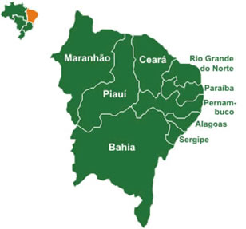
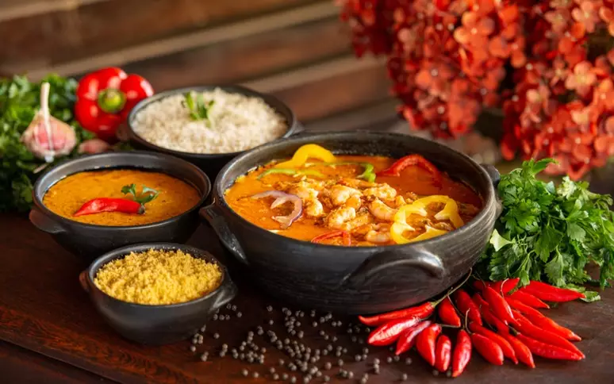
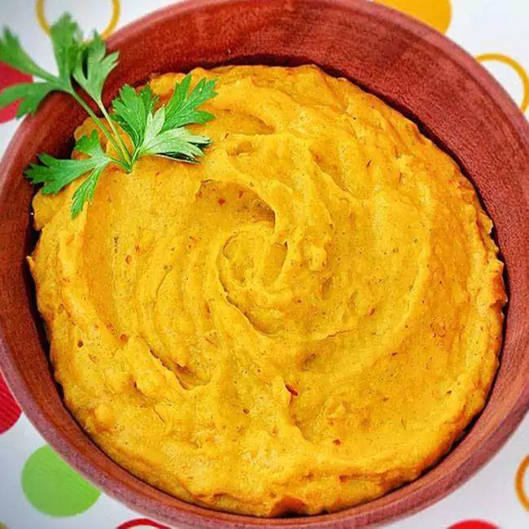
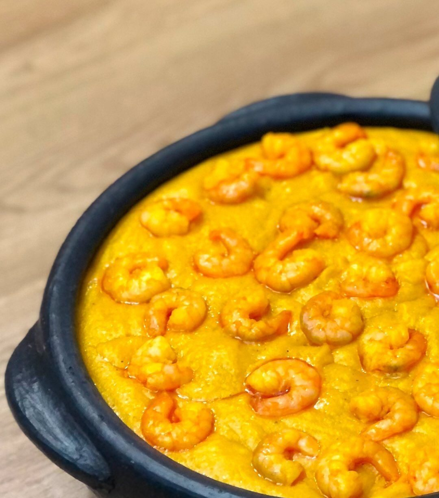

Morda a Borda
Não há limites para uma alimentação saudável.
Início •
Regiões
(Norte • Nordeste •
Centro-Oeste •
Sul •
Sudeste) •
Sobre Nós •
Referências
Região Nordeste

A cultura do Nordeste brasileiro (que compreende os estados do Maranhão, Piauí, Ceará, Rio Grande do Norte,
Paraíba,
Pernambuco, Alagoas, Sergipe e Bahia) desenvolveu hábitos próprios com relação ao mundo.
A cultura do Nordeste apresenta características próprias herdadas da interação da cultura
dos colonizadores
portugueses, dos negros e dos índios.

A culinária nordestina foi desenvolvida sob a influência da comida
portuguesa, africana e indígena. A culinária do Nordeste é bem
diversificada e
destaca-se pelos temperos fortes e comidas apimentadas.

O vatapá, por exemplo, é um creme feito com farinha de rosca ou fubá,
pimenta, leite de coco,
pão, azeite de dendê, camarão,
castanha de caju e amendoim. Ele pode ser
servido sozinho,
acompanhado de outras iguarias ou no clássico
recheio do acarajé.
Presente com elementos como o Azeite de Dendê, que inclui a presença
das vitaminas
A e E, fazendo bem para a visão dos olhos, e fazendo bem
para a saúde da pele;
a castanha de caju, que junto com o zinco
e vitaminas A e E, fortalece o sistema
imunológico e mantém a pele saudável;
Receita de Vatapá

Ingredientes
1/2 kg de camarão descascado e lavado, sem cabeça e rabo
2 tomates
1 azeite de dendê
10 pães
sal a gosto
2 cebolas médias
1 leite de coco
cheiro verde picado
2 pimentas cheirosas
Modo de Preparo
Refogue o camarão com 3 colheres de dendê junto com a cebola,
o tomate, cheiro verde e pimenta cheirosa, reserve.
Bata no liquidificador os pães com água, para 2 pães, 1 copo de água.
Despeje o pão batido em uma panela e leve ao fogo.
Deixe ferver, mexendo sempre, ele começará a engrossar.
Quando começar a ferver acrescente o restante do dendê.
Acrescente o camarão refogado.
Adicione o sal e pimenta, mexendo sempre para não grudar no fundo da panela.
Quando estiver quase pronto misture o leite de coco e retire do fogo.
© Airton Mesquita, Técnico em Nutrição e Dietética, 2023; IV FCAC
(Feira de Ciências, Arte e Cultura); EEEP Leonel de Moura Brizola.